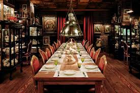

La Cocina de Mamá es un restaurante acogedor y familiar. Inspirado en las recetas tradicionales y los sabores de la cocina casera, con ingredientes frescos y de la mejor calidad. Su ambiente cálido y decoración rústica recuerdan el encanto de las cocinas de antaño, haciendo que cada visitante se sienta como en casa. Es el lugar ideal para disfrutar de una comida reconfortante, como las que solían preparar nuestras madres y abuelas.